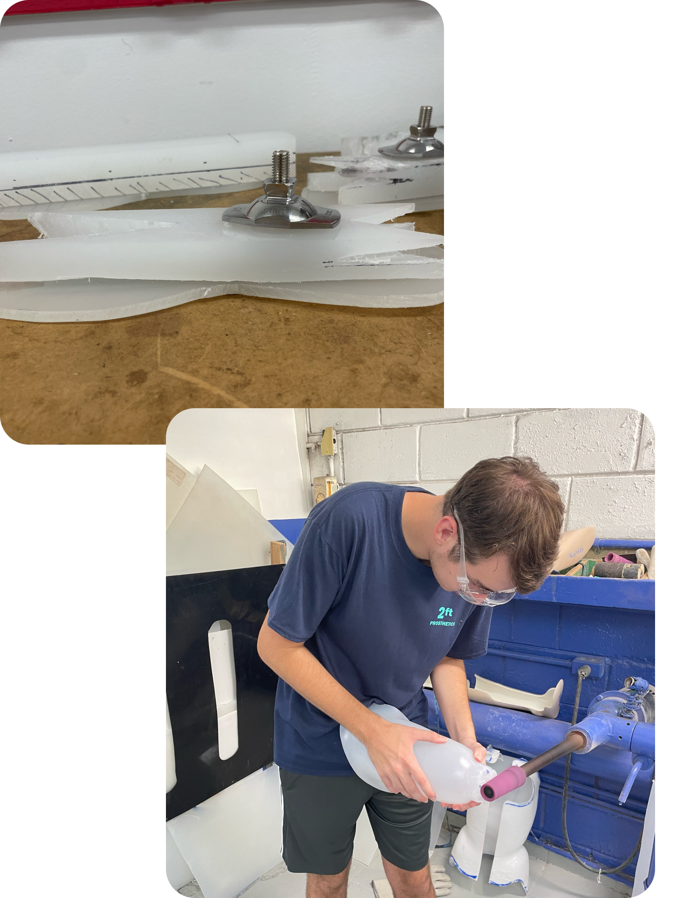
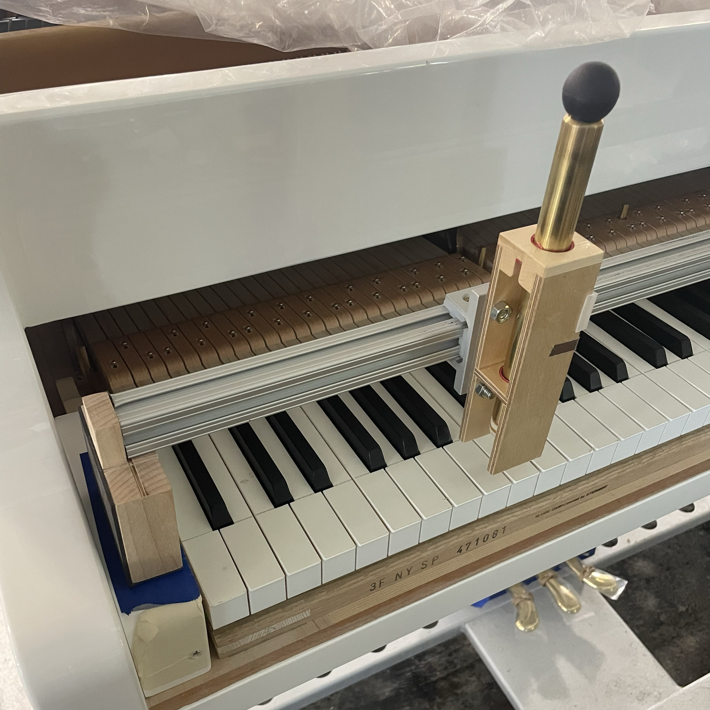
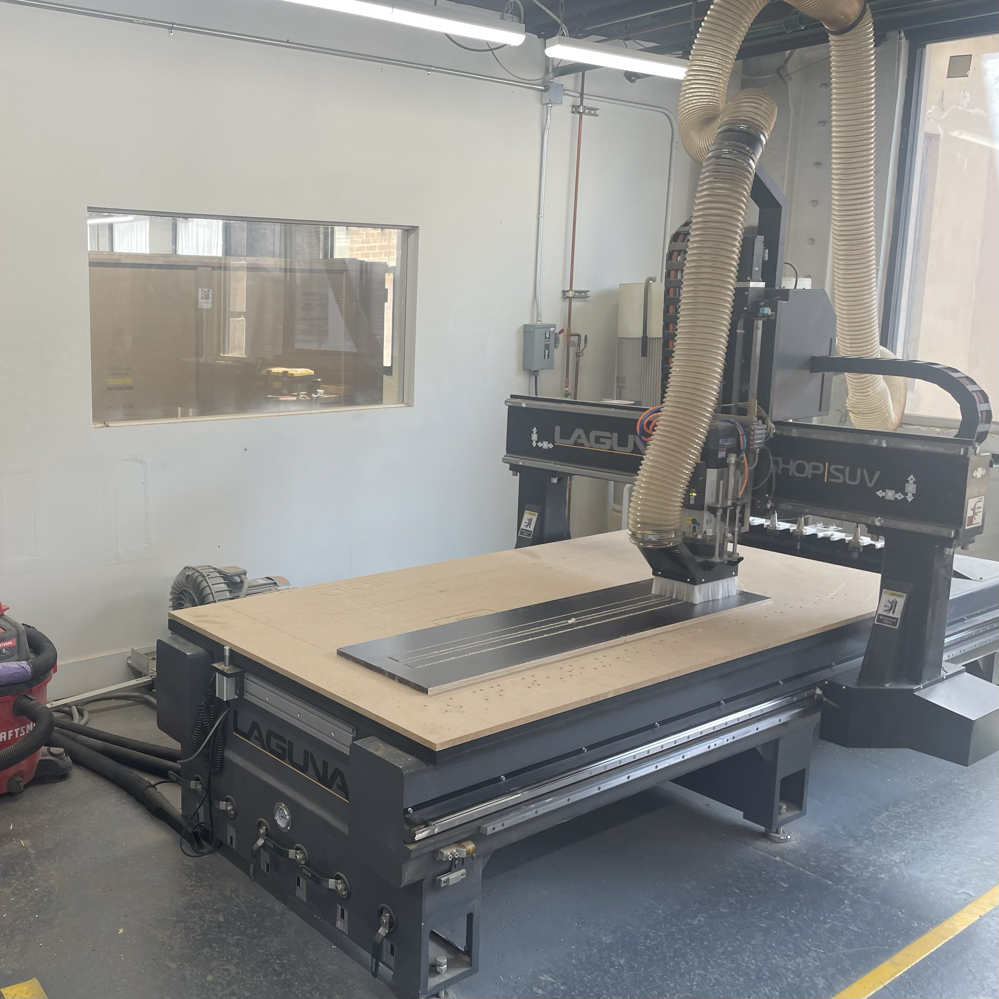
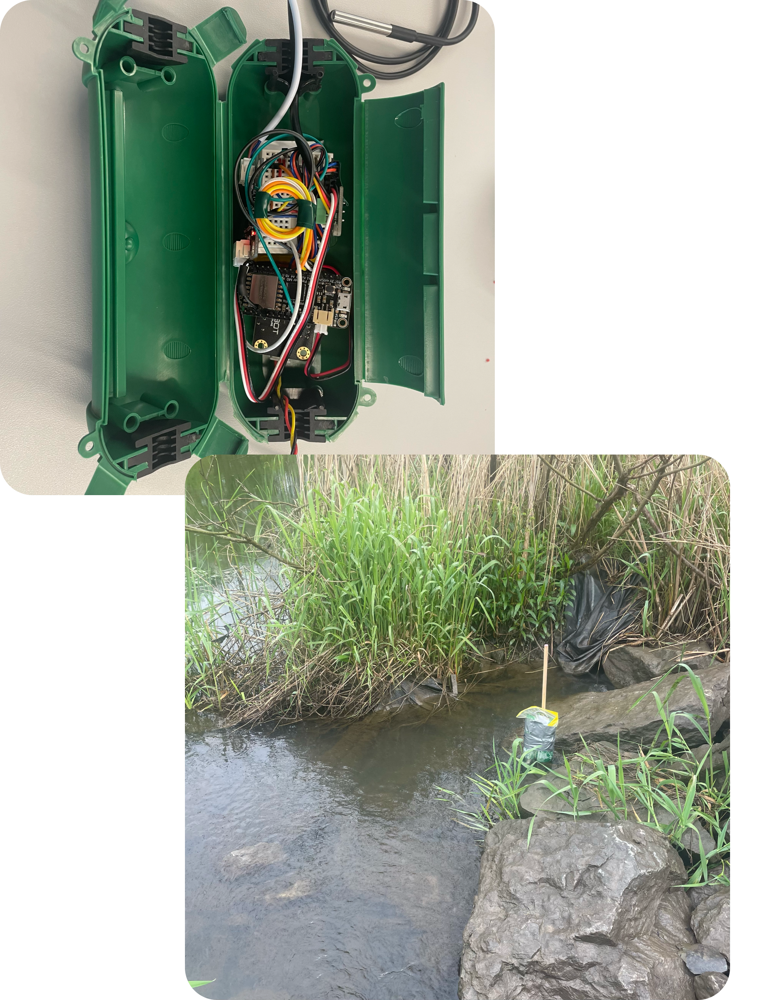

Hi! I'm Charlie.
My name is Charlie and I’m a senior studying Mechanical Engineering at Cornell University. I am passionate about mechanical product design and creating solutions which leave positive impacts on people’s lives. I currently lead the Integrative Design team of Engineering World Health at Cornell where I lead development on medical devices targeted towards underrepresented and less fortunate communities.


Engineering World Health
Project Lead

One-Size Foot
An affordable prosthetic foot that is customized to a patients size within their local prosthetic clinic. This collaboration with 2ft Prosthetics aims to reduce need for factory manufactured sach feet in countries with limited access to them. Prosthetists measure patients and construct their foot with common tools, allowing the prosthetic to be a perfect fit for each patient. My team and I collaborate closely with the founder of 2ft and worked hands-on with prosthetists at the ADR clinic in Santo Domingo, Dominican Republic.
The foot consists of a sole plate which is cut to the size of a patient’s shoe, and a keel block which is measured from a table comparing foot size and body weight. The geometry is simple to cut while also distributing forces similarly to a biological foot. A molded cover made with expanding pedilen foam gives the foot a realistic shape, providing patients more confidence in wearing their prosthetics despite the stigma against artificial limbs in some countries.
Steinway & Sons
Mechanical Engineering Intern

Special Piano Part Reviews
I created engineering drawings of custom outsourced parts for special edition pianos. I used my drawings to evaluate critical inspection dimensions, compare tolerances to vendor specifications, and provide constructive feedback to the part suppliers.
Test Blow Device Revision
A mounted key striker to test sounds of consistent blows across a keyboard. This project was a revision of an existing striking device which struck a single key and required support from adjacent keys which did not completely isolate the test note. I revised the design to be better supported and easily access all keys, including black keys and the ends of the keyboard.


CNC Factory Fixtures
I designed fixtures to be used in the factory and tools such as soundboard carts using VCarve and Fusion360. I programmed 3-Axis toolpaths and used a LAGUNA SmartShop SUV CNC to prototype and produce final versions of these tools.
Working closely with the factory was highlight of my time at Steinway, and I gained a lot of valuable insight to how production lines are managed and how each step of the line affects the next. I assessed issues with production efficiency and quality, and determined the root cause processes which led to these issues. My fixture designs were based on extensive data collection and process observation within the factory, as well as direct communication with the factory operators.
The Internet of Things - Technology and Engagement
MAE 4220 Coursework

IOT STEM Education through Water Quality Monitoring
An IOT enabled water quality sensor designed to educate high school students about the Internet of Things. In collaboration with our community partner from Geneva High School, my team and I designed a sensor package and a STEM curriculum to promote the field of Internet of Things to students who had minimal engineering education at their school.

Mechatronics
MAE 3780 Coursework

2024 ASML Robot Competition
A cube collecting robot designed around the parameters of the 2024 ASML robot competition at Cornell. The design was inspired by a Roomba with brushes to sweep cubes underneath the chassis. I designed mechanical components, breadboard layouts, and behavioral C code.